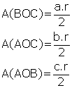

1. Genel Alan Bağıntısı
| ABC üçgeninde [BC] kenarına ait yükseklik [AH] |
Bir üçgenin alanı, bir kenarı ile o kenara ait yüksekliğin çarpımının yarısıdır.
| Hangi kenarı kullanırsak kullanalım üçgenin alanı sabittir. |
| Bir ABC üçgeninde yükseklik her zaman üçgenin içinde olmayabilir.
|
2. Dik Üçgende Alan
| Dik üçgenin alanı dik kenarlarının çarpımının yarısına eşittir.
|
|
3. Bir açısı ve bu açının kenarları bilinen üçgenin alanı;
| ABC üçgenindem(ABC) = a
|AB| = c |BC| = a |
a. Birbirini 180° ye tamamlayan açıların sinüsleri eşit olduğundan;
| eşitliği vardır. |
| b. |BC| = a |AB| = c uzunlukları sabit olan ABC üçgeninin alanının maksimum olabilmesi için a = 90° olmalıdır. |
| c. Hipotenüs uzunluğu sabit olan ABC dik üçgeninin alanının en büyük değerini alabilmesi için |AB| = |AC| olmalıdır.ABC üçgeni ikizkenar dik üçgen olmalıdır. |  |
| 4. Üç kenarının uzunluğu verilen üçgenin alanı;ABC üçgeninin çevresi Çevre(ABC) = a + b + c
Çevrenin yarısına u dersek |
| 5. Çevresi ve iç teğet çemberinin yarıçapı verilen üçgenin alanı; ABC üçgeninin iç teğet çemberinin yarıçapı r olsun. |
Bu üç alanı toplayarak ABC üçgeninin alanını bulabiliriz.
|
Bir ABC üçgeninde iç teğet çemberin yarıçapı r ve yükseklikler
| ABC dik üçgeninde A(ABC) = |BD|.|DC| |
| 6. Kenarları ve çevrel çemberinin yarıçapı verilen ABC üçgeninin çevrel çemberinin merkezi O ve yarıçapı R olsun.
|
| Üçgenin kenarının orta noktasından çizilen dik doğrulara orta dikme denir.[EA, a kenarının
[FO, b kenarının [DO, c kenarının orta dikmeleridir. |
O noktası çevrel çemberin merkezidir.
7. Yükseklikleri eşit üçgenlerin alanları arasındaki bağıntı;
Yükseklikleri eşit üçgenlerin alanlarının oranı tabanlarının oranına eşittir.
| ABC ve ACD üçgenlerinin tabanları aynı doğru üzerinde ve tepe noktaları aynı noktada olduğuna göre, yükseklikleri eşittir. |
| 8. Tabanları eşit üçgenlerin alanlarının oranı yüksekliklerinin oranına eşittir.ABC ve DBC üçgenlerinin tabanları eşit ve çakışıktır.
|